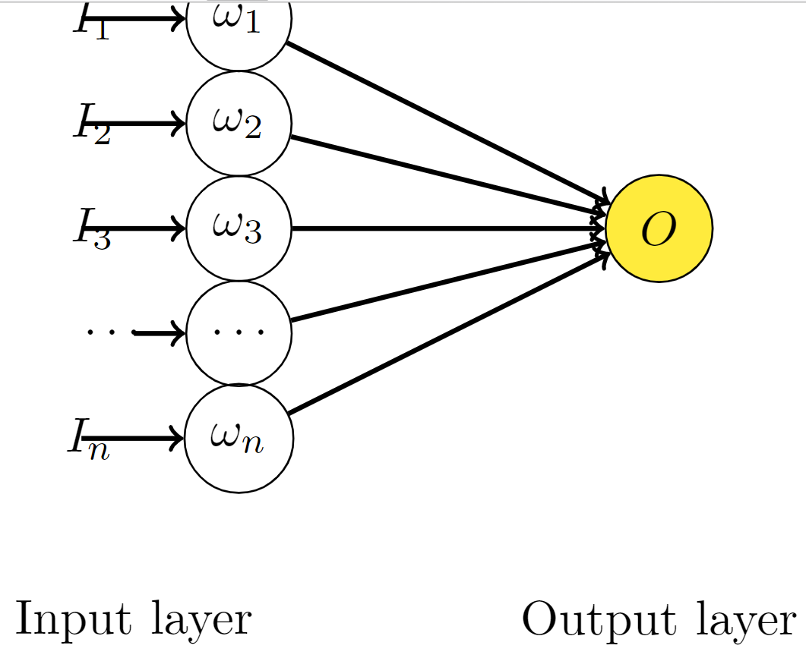

那么我的结果就是：
那么我的结果就是：  但是在这个分类任务中，我发现 dropout
层可以很好的防止过拟合，并且可以显著提高准确率，详细请看模型结构中的 FC
全连接层。
但是在这个分类任务中，我发现 dropout
层可以很好的防止过拟合，并且可以显著提高准确率，详细请看模型结构中的 FC
全连接层。在做 Lihongyi_HW1 时，我尝试了 dropout 层，但是发现只要添加后就会让
Loss 跑飞，详细如下：
那么我的结果就是： 但是在这个分类任务中，我发现 dropout
层可以很好的防止过拟合，并且可以显著提高准确率，详细请看模型结构中的 FC
全连接层。
note：NN.regression task and NN. classification are different.
考虑简单的线性神经网络:  可以看出他的输出为:
\[ O = \sum_{i}^n w_i I_i \]
对于无 Dropout 的网络，如果 t 是目标值:
\[ E_{N}=\frac{1}{2}\left(t-\sum_{i=1}^{n} w_{i}^{\prime} I_{i}\right)^{2} \]
\(\omega'\) 是为了找到之后要介绍的加入 Dropout 的网络的关系，其中 \(\omega'=p\omega\) 。
\[ E_N = \frac{1}{2}\left(t-\sum_{i=1}^{n} p_i w_{i} I_{i}\right)^{2} \]
\[ \frac{\partial E_{N}}{\partial w_{i}}=-t p_{i} I_{i}+w_{i} p_{i}^{2} I_{i}^{2}+\sum_{j=1, j \neq i}^{n} w_{j} p_{i} p_{j} I_{i} I_{j} \]
当我们添加 Dropout 之后可知：假设丢失率$(p) $服从伯努利分布，即它有 p 的概率值为 1 ， 1-p 的概率值为 0 。 那么
\[ E_{D}=\frac{1}{2}\left(t-\sum_{i=1}^{n} \delta_i w_{i} I_{i}\right)^{2} \]
\[ \frac{\partial E_{D}}{\partial w_{i}}=-t \delta_{i} I_{i}+w_{i} \delta_{i}^{2} I_{i}^{2}+\sum_{j=1, j \neq i}^{n} w_{j} \delta_{i} \delta_{j} I_{i} I_{j} \]
\[ \begin{aligned} E\left[\frac{\partial E_{D}}{\partial w_{i}}\right] &=-t p_{i} I_{i}+w_{i} p_{i}^{2} I_{i}^{2}+w_{i} \operatorname{Var}\left(\delta_{i}\right) I_{i}^{2}+\sum_{j=1, j \neq i}^{n} w_{j} p_{i} p_{j} I_{i} I_{j} \\ &=\frac{\partial E_{N}}{\partial w_{i}}+w_{i} \operatorname{Var}\left(\delta_{i}\right) I_{i}^{2} \\ &=\frac{\partial E_{N}}{\partial w_{i}}+w_{i} p_i \left(1 - p_{i}\right) I_{i}^{2} \end{aligned} \]
我们可以看出，在 \(\omega'=p\omega\)的前提下，带有 Dropout 的网络的梯度的期望等价于带有正则的普通网络。换句话说，Dropout 起到了正则的作用，正则项为\( w _ i p_i (1 - p _ {i}) I_i^{2}\) 。
没有添加 Dropout 的网络是需要对网络的每一个节点进行学习的，而添加了 Dropout 之后的网络层只需要对该层中没有被 Mask 掉的节点进行训练。 也就是说，Dropout 层添加后改变了输出的方差，而不改变输出的均值。
考虑\(d \sim \text{Bernoulil}(p)\)，那么对于输入的随机变量\(h\)有： \[h'=\frac{1}{p}dh\] 均值： \[E(h')=\frac{1}{p}E(d)\cdot \mu_h=\mu_h\] 方差： \[Var(h')=E(h'^2)-E(h')^2=\frac{1}{p^2}E(d^2)E(h^2)-\mu_h^2=\frac{1}{p}E（h^2）-\mu_h\] 那么到了这一步，我们就可以知道 dropout 会导致样本分布的整体偏移，在经过 RELU 非线性层的处理后，最终导致整个网络输出结果的偏移。训练结果（权重\(\omega\)与偏移标量\(b_{\text{bias}}\)）会适合于 dropout 后的训练内容，而在未经过 dropout 的验证集中就不适合。
回归任务中的评价函数一般都是loss，所以不适合添加dropout层。 但是对于分类任务，输出结果是类别判断，往往是输出的一个范围值划分为一类，所以几乎不受影响。 #### 2. BN层: 参考链接:什么是BatchNorm
添加batchNorm是有效的。
BatchNorm1d\( (h_i)\) 批量归一化通过对 mini-batch 中的数据进行标准化来定中间层的分布。 规定\(m=\text{batch}\),\(\gamma\)与\(\beta\)为可学习参数。
批量归一化公式如下： \[ \mu _{\text{batch}} = \frac{1}{m} \sum _{i=1}^{m} x_i \] \[ \sigma _{\text{batch}}^2 = \frac{1}{m} \sum _{i=1}^{m} (x_i - \mu _{\text{batch}})^2 \] \[ \hat{x}_i = \frac{x_i - \mu_{\text{batch}}}{\sqrt{{\sigma}_{\text{batch}}^2 + \epsilon}} \] \[ y _{i} = \gamma \hat{x} _{i} + \beta \]
省流答案是会变差的，因为两者会导致验证集的方差不同。